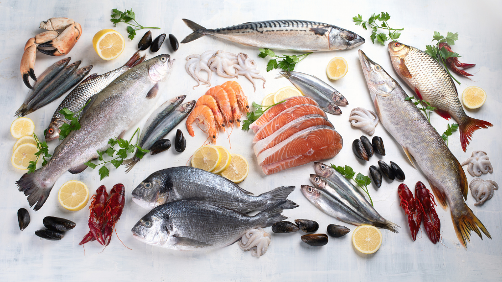
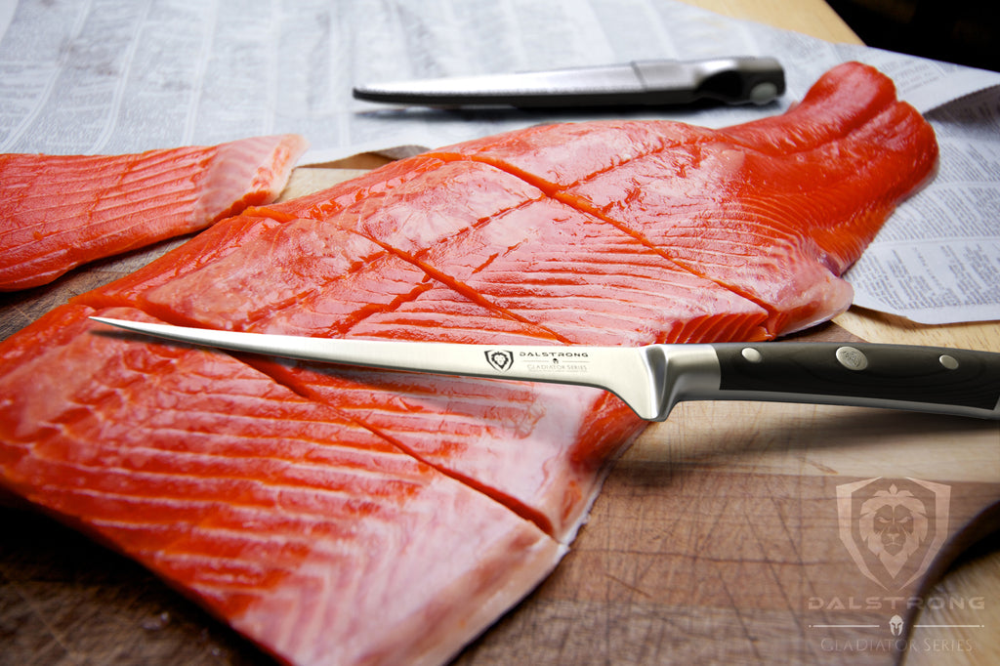
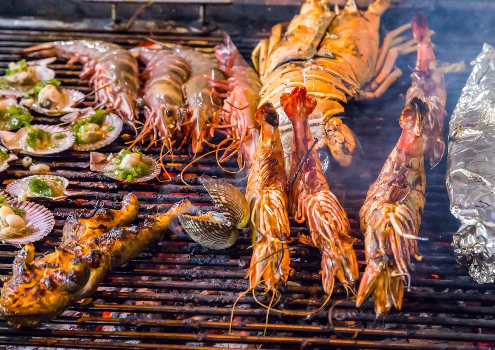
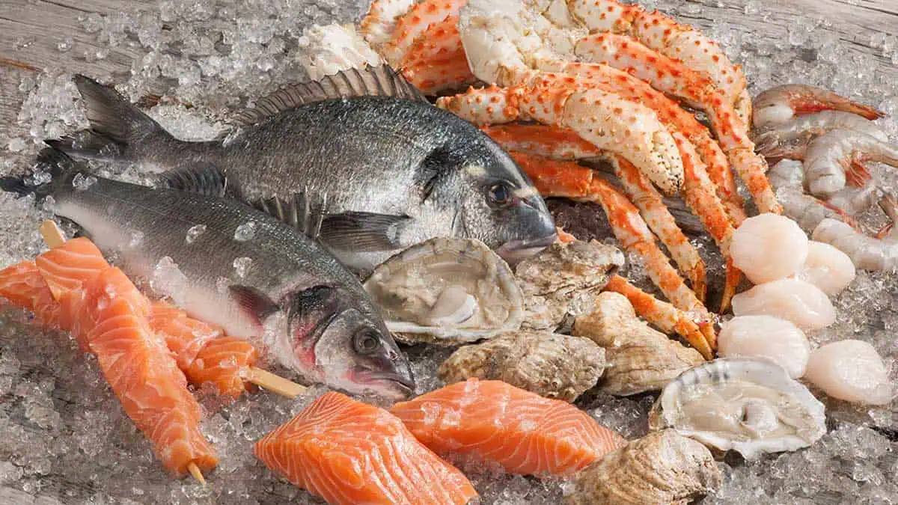

Seafood Guide
Introduction to Seafood
Seafood encompasses a wide variety of edible marine life, including fish, shellfish, and seaweed. It's celebrated for its distinct flavors and health benefits, such as high protein content and omega-3 fatty acids.
Seafood can be enjoyed in numerous ways, from fresh sashimi to grilled fish or seafood stews. With its rich diversity, seafood offers a unique culinary experience and is an integral part of many global cuisines.
How to Select Fresh Seafood
Selecting fresh seafood is crucial for both flavor and safety. Look for bright, clear eyes in fish, a mild sea-breeze smell, and firm, shiny flesh. Shellfish should have tightly closed shells or should close when tapped.
Seafood Preparation Tips
Proper preparation is key to unlocking the flavors of seafood. Keep it chilled until ready to cook, and use a sharp knife for filleting. Consider marinating to enhance flavors and tenderize the meat.
Cooking Seafood
Cooking seafood can be simple yet rewarding. Whether you prefer grilling, steaming, or pan-frying, ensure you don’t overcook your seafood. Most fish are done when they reach an internal temperature of 145°F and are opaque and flake easily with a fork.
Storing Seafood
Fresh seafood should be stored in the coldest part of your refrigerator and used within two days. If you plan to keep it longer, freeze it immediately. Ensure it is tightly wrapped to avoid freezer burn.
Recommended Seafood Dishes
Grilled Salmon
Grilled salmon is a flavorful dish with a smoky, tender texture. It's typically seasoned with simple ingredients like lemon and herbs, highlighting the fish's rich taste. Packed with omega-3s, it's a healthy and delicious option, often paired with vegetables or salads.
Ikan Bakar
Ikan bakar is a traditional Southeast Asian dish where fish is marinated with spices, then grilled over an open flame. It has a smoky, charred flavor, often enhanced with sambal or other sauces. This dish is commonly served with rice and vegetables.
Keropok Lekor
It's typically deep-fried until crispy on the outside and chewy on the inside. Often enjoyed with a sweet and spicy chili sauce, Keropok Lekor is a popular street food, especially in the east coast states of Malaysia.
Lobster Thermidor
Lobster Thermidor is a classic French dish featuring lobster meat cooked in a rich, creamy sauce made with egg yolks, mustard, and brandy or cognac. The mixture is then returned to the lobster shell, topped with cheese, and baked until golden and bubbly. This luxurious dish is known for its decadent flavors and elegant presentation, making it a favorite for special occasions.
Maine-Style Lobster Rolls
Maine-style lobster rolls are a beloved New England dish featuring fresh lobster meat lightly dressed with mayonnaise, and sometimes a touch of lemon juice, celery, or chives. The lobster is served in a toasted, buttered split-top roll, allowing the sweet, succulent flavor of the lobster to shine.